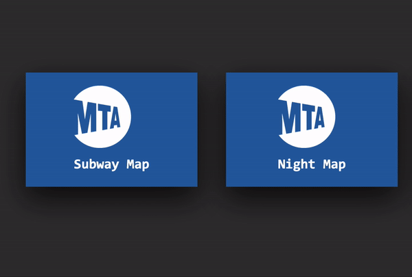

Triggers
Hover
Rules & Feedback
Background color changes to blue.
Font color changes to white.
Cursor changes to a hand cursor over image to signal clickable element.
Loops & Modes
There are no loops or modes.
New Interaction

Triggers
Hover
Rules & Feedback
Blue card fades to a grey overlayed preview image of the subway map.
Card expands to show the preview image underneath the MTA logo.
Description appears along with a "View Map" button.
Cursor changes to a hand cursor over button.
Loops & Modes
There are no loops or modes.